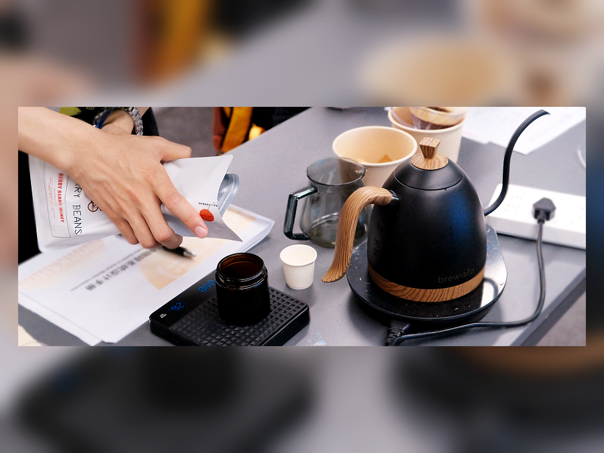
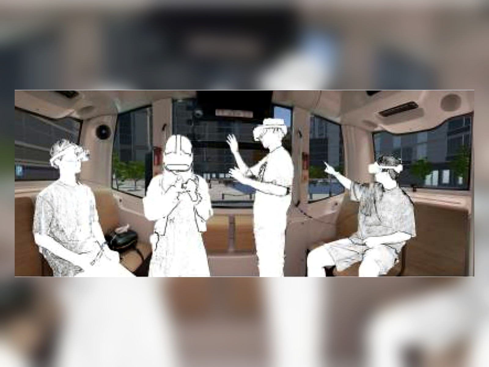
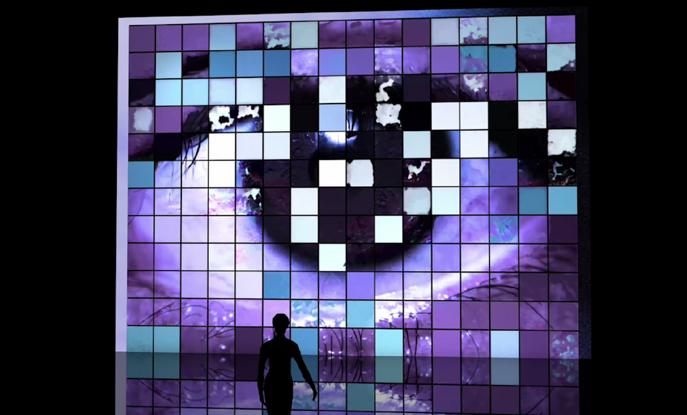
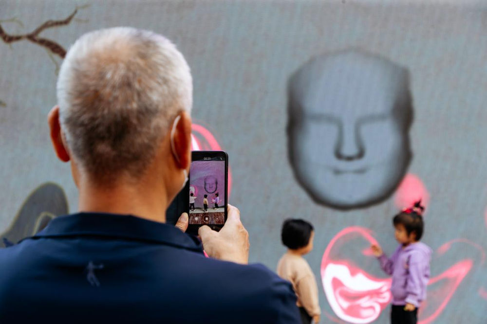
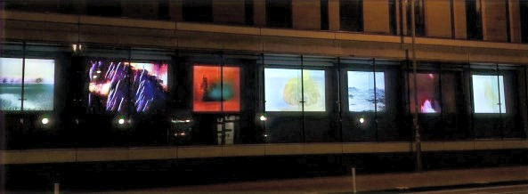
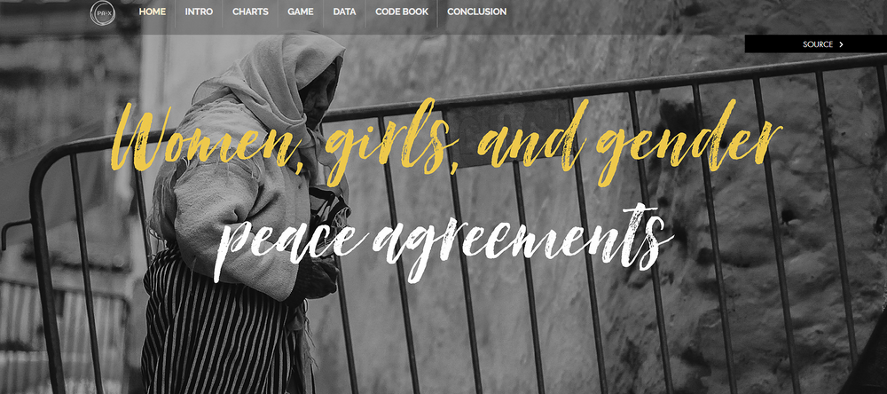
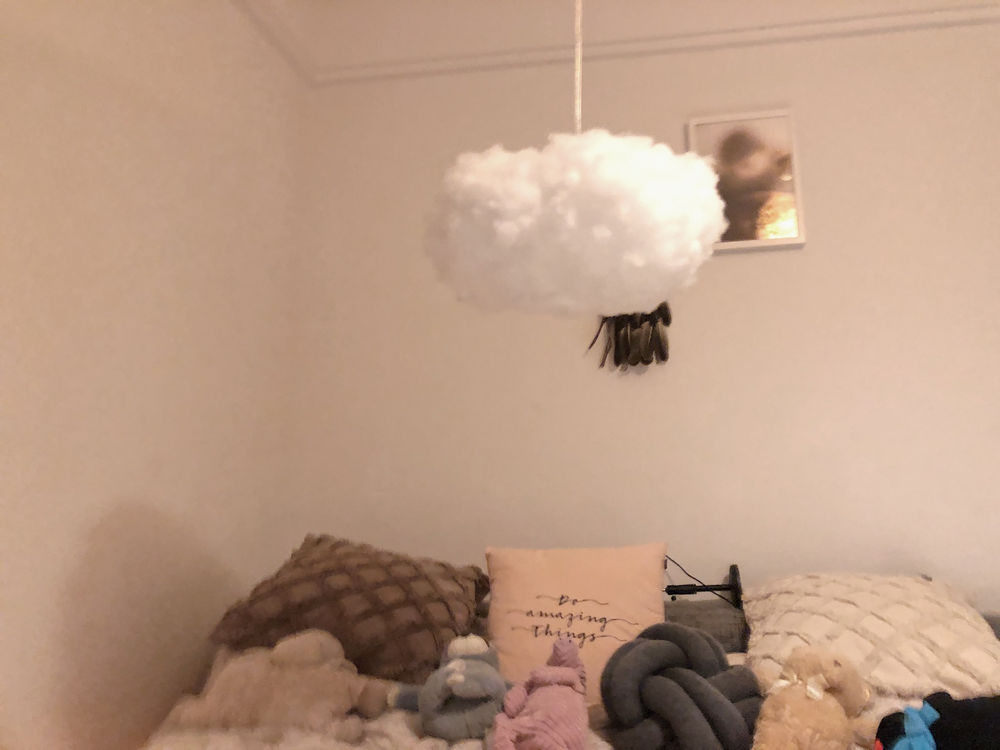

More projects and writing
A compact archive of selected research notes, design explorations, prototypes, and earlier project documentation. Some entries open as local project pages; others link back to the original Wix posts.
 Designability of LLMs
Designability of LLMs
Everyday LLM use as ongoing design.

Configuring Participants as Covert EvaluatorsQuestioning interpretive authority in technology design.
 When My Car Whispers Secrets to My Home
When My Car Whispers Secrets to My Home
Speculating about connected cars, homes, and lives in-between.

Beyond DrivingEnvisioning life in autonomous vehicles.
 Hear Us, then Protect Us
Hear Us, then Protect Us
Designing with older adults against deepfake scams.
 Who Holds the Control?
Who Holds the Control?
Uncovering power in smart homes.

EYE · AIA public art installation about visual interpretation through AI.

Qinqiang Opera, Xi'an Locals, and New Media ArtA participatory exploration of folk culture.

Ballads IllusionEnhancing British ballads with human-AI collaboration.
 You Are Mapped by Digital Mappings!
You Are Mapped by Digital Mappings!
A data-driven mobile app prototype for surroundings perception.

Women and Peace Glimpsed from DataA data visualization project based on peace agreement data.

A Cloud Indicating Your Sleep QualityAn interactive artefact for sleep procrastination awareness.